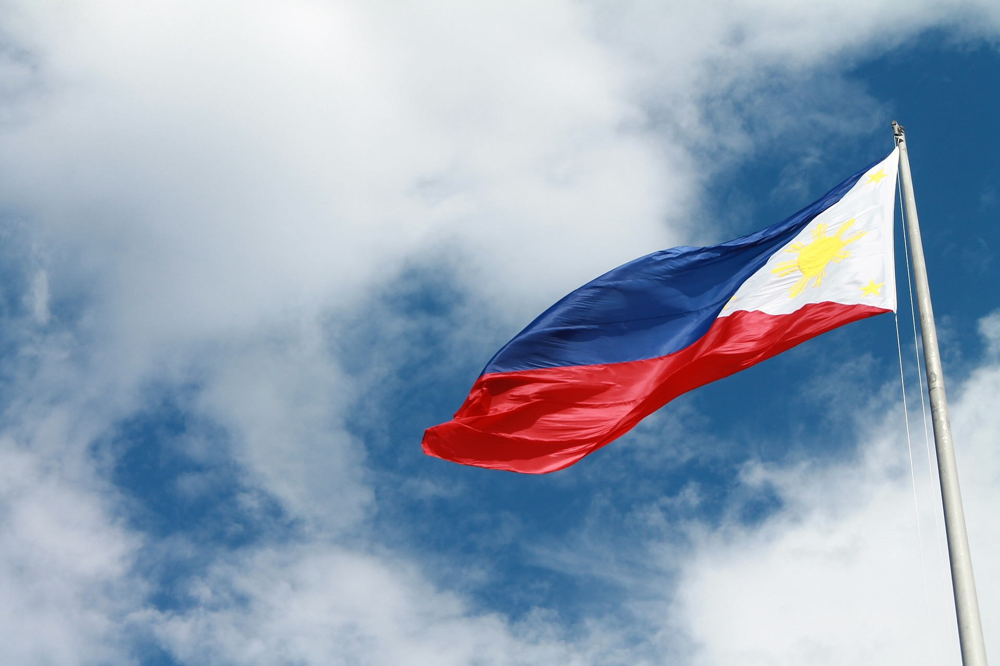

About Philippines
 Philippines, island country of Southeast Asia in the western Pacific Ocean. It is an archipelago consisting of more than 7,000 islands and islets lying about 500 miles (800 km) off the coast of Vietnam. Manila is the capital, but nearby Quezon City is the country’s most-populous city. Both are part of the National Capital Region (Metro Manila), located on Luzon, the largest island. The second largest island of the Philippines is Mindanao, in the southeast. The Philippines takes its name from Philip II, who was king of Spain during the Spanish colonization of the islands in the 16th century. Because it was under Spanish rule for 333 years and under U.S. tutelage for a further 48 years, the Philippines has many cultural affinities with the West. It is, for example, the second most-populous Asian country (following India) with English as an official language and one of only two predominantly Roman Catholic countries in Asia (the other being East Timor). Despite the prominence of such Anglo-European cultural characteristics, the peoples of the Philippines are Asian in consciousness and aspiration. The country was wracked by political turmoil in the last quarter of the 20th century. After enduring more than a decade of authoritarian rule under Pres. Ferdinand Marcos, the broadly popular People Power movement in 1986 led a bloodless uprising against the regime. The confrontation resulted not only in the ouster and exile of Marcos but also in the restoration of democratic government to the Philippines Contemporary Filipinos continue to grapple with a society that is replete with paradoxes, perhaps the most obvious being the presence of extreme wealth alongside tremendous poverty. Rich in resources, the Philippines has the potential to build a strong industrial economy, but the country remains largely agricultural. Especially toward the end of the 20th century, rapid industrial expansion was spurred by a high degree of domestic and foreign investment. That growth, however, simultaneously contributed to severe degradation of the environment. The Philippines also emerged as a regional leader in education during the late 20th century, with a well-established public school and university system, and by the early 21st century the country had one of the highest literacy rates in Asia.
The land of Philippine archipelago is bounded by the Philippine Sea to the east, the Celebes Sea to the south, the Sulu Sea to the southwest, and the South China Sea to the west and north. The islands spread out in the shape of a triangle, with those south of Palawan, the Sulu Archipelago, and the island of Mindanao outlining (from west to east, respectively) its southern base and the Batan Islands to the north of Luzon forming its apex. Historically, the total number of islands in the archipelago was held to be 7,107, but in 2016 the National Mapping and Resource Information Authority of the Philippines announced the discovery of more than 500 previously uncharted islands. The archipelago stretches about 1,150 miles (1,850 km) from north to south, and its widest east-west extent, at its southern base, is some 700 miles (1,130 km). The island of Taiwan lies north of the Batan group, the Malaysian portion of the island of Borneo is to the south of Palawan, and the eastern islands of Indonesia lie to the south and southeast of Mindanao. Only about two-fifths of the islands and islets have names, and only some 350 have areas of 1 square mile (2.6 square km) or more. The large islands fall into three groups: (1) the Luzon group in the north and west, consisting of Luzon, Mindoro, and Palawan, (2) the Visayas group in the centre, consisting of Bohol, Cebu, Leyte, Masbate, Negros, Panay, and Samar, and (3) Mindanao in the south.
Relief Outstanding physical features of
the Philippines include the irregular configuration of the
archipelago, the coastline of some 22,550 miles (36,290 km), the
great extent of mountainous country, the narrow and interrupted
coastal plains, the generally northward trend of the river
systems, and the spectacular lakes. The islands are composed
primarily of volcanic rock and coral, but all principal rock
formations are present. The mountain ranges for the most part
run in the same general direction as the islands themselves,
approximately north to south. The Cordillera Central, the central
mountain chain of Luzon, running north to the Luzon Strait from
the northern boundary of the central plain, is the most prominent
range. It consists of two and in places three parallel ranges,
 each with an average elevation of about 5,900 feet (1,800 metres).
The Sierra Madre, extending along the Pacific coast from northern
to central Luzon, is the longest mountain range in the country.
That range and the Cordillera Central merge in north-central
Luzon to form the Caraballo Mountains. To the north of the latter,
and between the two ranges, is the fertile Cagayan Valley. The
narrow Ilocos, or Malayan, range, lying close along the west
coast of northern Luzon, rises in places to elevations above
5,000 feet (1,500 metres) and is seldom below 3,500 feet
(1,000 metres); it is largely volcanic. In the southwestern part
of northern Luzon are the rugged Zambales Mountains, consisting
of more or less isolated old volcanic stocks (rock formed under
great heat and pressure deep beneath the Earth’s surface). Most
of the central plain of Luzon, about 150 by 50 miles
(240 by 80 km), is only about 100 feet (30 metres) above sea
level. The greater part of southern Luzon is occupied by isolated
volcanoes and irregular masses of hills and mountains.
The highest peak is Mayon Volcano (8,077 feet [2,462 metres)]),
near the city of Legaspi (Legazpi) in Albay province on the
island’s Bicol Peninsula in the southeast.
each with an average elevation of about 5,900 feet (1,800 metres).
The Sierra Madre, extending along the Pacific coast from northern
to central Luzon, is the longest mountain range in the country.
That range and the Cordillera Central merge in north-central
Luzon to form the Caraballo Mountains. To the north of the latter,
and between the two ranges, is the fertile Cagayan Valley. The
narrow Ilocos, or Malayan, range, lying close along the west
coast of northern Luzon, rises in places to elevations above
5,000 feet (1,500 metres) and is seldom below 3,500 feet
(1,000 metres); it is largely volcanic. In the southwestern part
of northern Luzon are the rugged Zambales Mountains, consisting
of more or less isolated old volcanic stocks (rock formed under
great heat and pressure deep beneath the Earth’s surface). Most
of the central plain of Luzon, about 150 by 50 miles
(240 by 80 km), is only about 100 feet (30 metres) above sea
level. The greater part of southern Luzon is occupied by isolated
volcanoes and irregular masses of hills and mountains.
The highest peak is Mayon Volcano (8,077 feet [2,462 metres)]),
near the city of Legaspi (Legazpi) in Albay province on the
island’s Bicol Peninsula in the southeast.